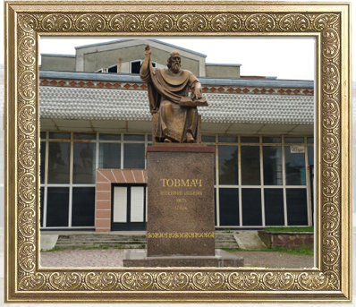

Товмач
Місто було засноване в другій половині XII століття в час найвищого культурного розквіту Галицького князівства за князювання Ярослава Осмомисла (1152-1187).  В Дністровській низовині, в центрі князівства, недалеко від річки Дністер, поблизу торгових шляхів, які проходили із заходу на схід, на берегах невеликої річки Дустрів (Тлумачик) для потреб князівства і з волі князя було засноване державне місто товмачів (перекладачів) Толмач. Тут жили князівські люди і несли митну службу, оформляли торгові справи князівського двору, були перекладачами під час переговорів з представниками іноземних держав, оформляли справи дипломатичного характеру торгових зносин, від них довідувалися про ціни на товари, про торгові шляхи тощо. Спочатку для утримання цих службових людей відраховували частину грошей від податків. Згодом вони були наділені землями. У XIV-XV ст. в Тлумачі розвинулися ремесла ковалів, шевців, цирульників, гончарів, стельмахів, м’ясників, пекарів та інших. Розвиток ремесла призвів до розвитку торгівлі. Підтвердженням високого рівня рукомесла є королівський указ, виданий 1448 року, за яким Товмачеві надавалось Маґдебурзьке право.